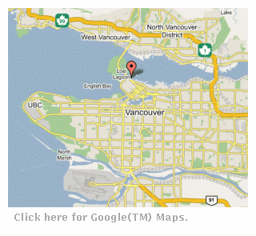

Venue
The Westin Bayshore Resort & Marina
Located on the Waterfront between Stanley Park, the Pacific Ocean,
downtown Vancouver, and Coal Harbor with spectacular views of the
Inner Harbor and Coastal Mountains; only a short walk away from
North America's largest urban park and minutes from the heart of
downtown, shopping centers and restaurants.
Internet Service at the Conference
Directions

From Vancouver International Airport
-
Take Grant McConachie Way (which is the main road from the terminal)
onto the Arthur Laing Bridge. Stay in the right hand lane and take
the Granville Street exit.
-
Follow Granville Street all the way onto the Granville
Street Bridge. As you go down the bridge, again stay in the right
hand lane, and take the Seymour Street exit.
-
Follow Seymour
Street then turn left onto Georgia Street. Just before Stanley Park,
turn right onto Cardero Street. The Resort is located at the foot of
Cardero Street.
Driving time - approximately thirty (30) minutes.
AIRPORT TRANSPORTATION
-
Airport shuttle is available
through the resort's concierge service or at the airport.
-
Taxis are also available at $24.00-$28.00 CDN to the hotel, maximum of 5
people. Limousine service available at $35.00-$45.00 CDN to the
hotel, maximum 6 people.
-
Rental cars are available.
From Seattle, Washington
-
Take Highway I-5 to the
Canada/US Border. After crossing the Canada/US Border the I-5 becomes
Highway #99.
-
Follow Highway #99 over the Oak Street Bridge,
which will take you on to Oak Street. Stay on Oak Street until 41st
Avenue where you turn left. At the next major intersection turn right
onto Granville Street.
-
Follow Granville Street over the
Granville Street Bridge. Stay in the right hand lane and take the off
ramp at Seymour Street.
-
Follow Seymour Street to Georgia
Street. Turn left onto Georgia Street. Just before Stanley Park turn
right on Cardero Street. The Resort is located at the foot of Cardero
Street.
Driving Time - approximately three and a half (3.5)
hours.
From Highway #1 (Trans Canada Highway)
-
On Highway #1 traveling Westbound, take the Hastings Street Exit. Turn left at the
light going west on Hastings Street.
-
Turn left one block at
Burrard Street then turn right on to Pender Street. Follow Pender
Street to Cardero Street and turn right and follow the street. The
Resort is located at the foot of Cardero Street.
From the Tsawwassen Ferry
-
As you come away from the
Tsawwassen Ferry Terminal you are on Highway #17. Highway #17 will
intersect with Highway #99. Take the Highway #99 North off ramp.
-
Continue on Highway #99 over the Oak Street Bridge, which
will take you on to Oak Street. Stay on Oak Street until 41st Avenue
where you turn left. At the next major intersection turn right onto
Granville Street.
-
Follow Granville Street over the Granville
Street Bridge. Stay in the right hand lane and take the off ramp at
Seymour Street.
-
Follow Seymour Street to Georgia Street. Turn
left onto Georgia Street. Just before Stanley Park turn right on
Cardero Street. The Resort is located at the foot of Cardero Street.
Driving time - approximately one (1) hour.